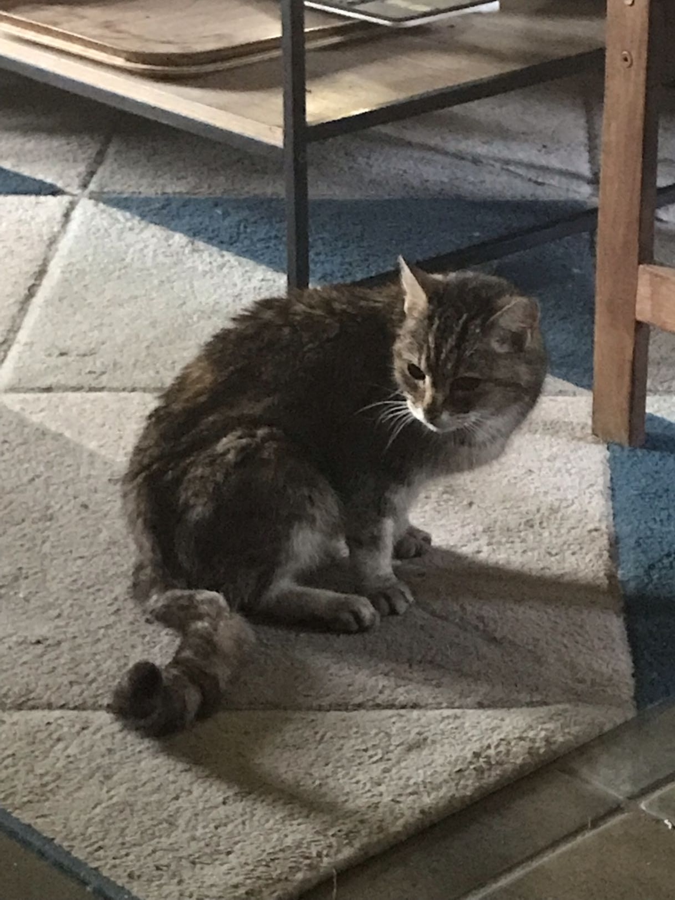

"A beloved cat, a loyal friend, and a little soul who left paw prints on our hearts."

Kit Kat was more than just a pet; he was family. With his soft purrs and gentle headbutts, he brought warmth and comfort to every room he entered.
He loved basking in the afternoon sun, chasing after his favorite feather toy, and curling up for cozy naps on the softest blankets he could find.
His quirky personality and unconditional love made every day brighter. Though he may be gone from our sight, his memory will forever live on in our hearts, a quiet presence of love and joy.
The day Kit Kat joined our family, bringing endless joy, tiny meows, and a sudden need to hide all the shoelaces.
Exploring the garden for the very first time, bravely chasing butterflies and cautiously sniffing the flowers.
Discovering the absolute bliss of the fireplace and officially claiming the best, softest spot in the house as his own.
Saying goodbye to our dearest friend, wrapped in love, knowing his paw prints will remain on our hearts forever.